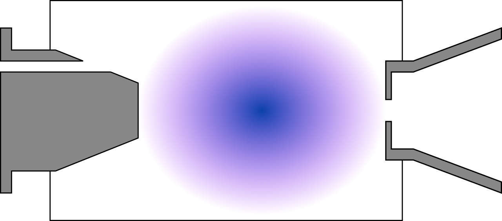
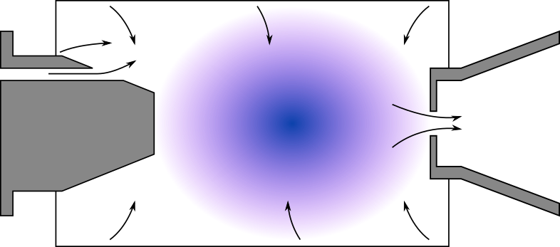
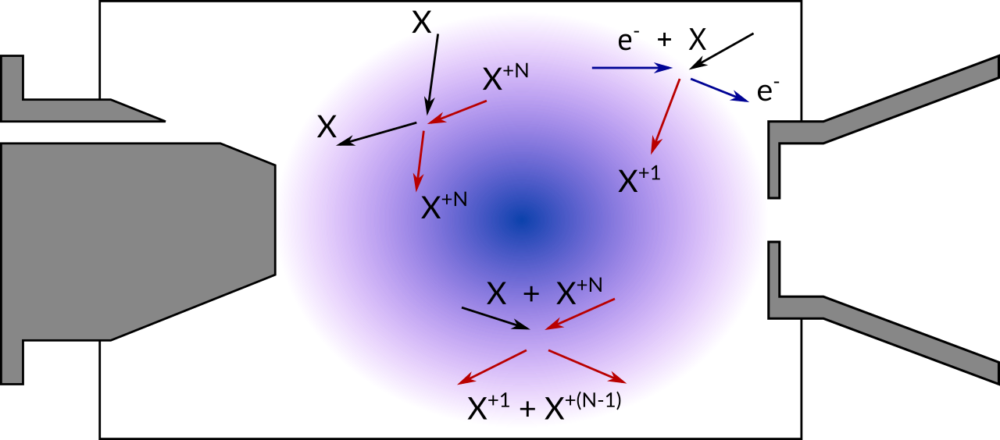

Huomioitavat prosessit

Neutraalien vuo

- kaasunsyöttö
- seiniltä irtoavat kaasut
- saumat
- ekstraktio
Plasman ja neutraalien vuorovaikutus

- varauksenvaihto
- elektroni-ionisaatio
- elastinen sironta
Neutralisaatio
- rekombinaatio
- varauksenvaihto
- ionien seinätörmäykset
Seinätörmäykset
- adsorptio-desorptio
- suunnan vaihtuminen
- lämpöakkommodaatio
- tarttumisen aikaskaala?